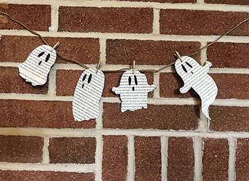

Step 3: Cutting Out the Design
Using scissors, cut along the pencil line of the outline of the ghost.

Optional: You can cut clean lines or using funky scissors could make them more fun and stylized!
Using scissors, cut along the pencil line of the outline of the ghost.

Optional: You can cut clean lines or using funky scissors could make them more fun and stylized!